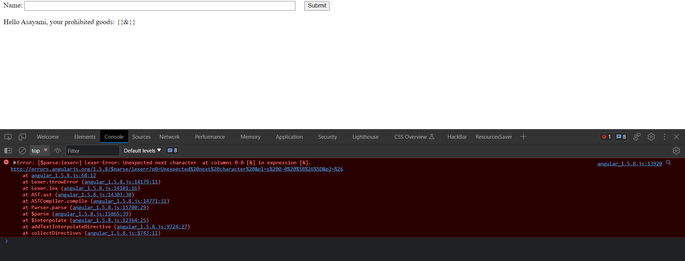

❅

❆
❄

❅
❆

❄
AngularJS là một thư viện JS rất phổ biến hiện nay, nhưng đi kèm với nó là những lỗ hổng tiềm tàng. Thư viện này đã bị khai thác qua nhiều phiên bản và phải cập nhật, bỏ bớt một số tính năng để đảm bảo tính bảo mật đối với các lỗ hổng đã được tìm thấy. Trong bài viết này chúng ta sẽ xem tại sao AngularJS lại hay bị khai thác, cũng như xem cách khai thác của các phiên bản AngularJS trước đây.
Bài viết này mình sẽ dựa trên series AngularJS Security của LiveOverflow. Vì nội dung của series AngularJS Security đã khá đầy đủ rồi nên mình sẽ chỉ thêm thắt và giải thích một số chỗ khó hiểu của series này.
Link playlist AngularJS Security: Here
AngularJS là ngôn ngữ front-end thuần Javascript. Nó cung cấp khả năng data binding ở phía client thông qua {{expression}}. Các expression này sẽ được đánh giá kỹ lưỡng, check xem đã khai báo ở scope đó chưa. Vì tính bảo mật này, tính chất này còn được gọi là Angular sandbox. Bên cạnh expression đã khai báo, AngularJS cũng cho phép truy cập Function constructor, window object, DOM element, biến global, hoặc Object constructor.
Bạn đọc có thể tìm hiểu sâu hơn về AngularJS tại: W3SChools
Để test và exploit các lỗ hổng AngularJS, mình sử dụng một page PHP tên là search.php như dưới đây:
<script src='angular_1.0.8.js'></script>
<form action="search.php" method="get">
Name: <input type="text" name="data" style="width:40%;">
 <input type="submit">
</form>
<div ng-app>
<p>Hello Asayami, your prohibited goods:
<?php
echo htmlspecialchars(($_GET['data']),ENT_QUOTES);
?>
</p>
</div>
Tuy nhiên, ví dụ trên không đúng với cách sử dụng AngularJS, vì ngôn ngữ này là front-end, hoạt động bên client, không nên dính
dáng tới ngôn ngữ back-end như PHP. Nhưng chúng ta vẫn có thể sử dụng nó để tiếp cận dễ dàng với AngularJS.
Các bạn đọc có thể tải thư viện phiên bản mong muốn ở trang chủ của angular.
Để có thể tìm ra hàm getterFn, Lexer tuần tự, chúng ta có thể mò theo dòng xử lý. Sau khi load URL mong muốn, hãy mở
Dev Tool, tab Sources, ở cột phải nhấn vô nút
(pause script execution) và sử dụng các nút mũi tên bên phải để lướt qua các function call. Step over là đi tới vị trí thực thi ngang hàng tiếp theo, step into
là đào sâu vào bên trong một hàm đang trỏ tới xem bên trong nó làm gì, step out of là ngược lại. Cộng thêm việc quan sát callback, cách đặt tên hàm và biến,
comment ở source code full mà chúng ta sẽ đoán được block code nào làm gì, có quan trọng không.
Sau khi đã xác định được đoạn code
cần kiểm tra, hãy đặt break point ở cuối đoạn code đó để lần tới chạy sẽ biết thêm thông tin các giá trị của biến local. Bạn đọc có thể
đặt break point bằng cách click vào số dòng, thêm đoạn text "debugger;" vào vị trí mong muốn ở file js. Mỗi lần dừng có thể trỏ vào object hoặc chuyển qua tab console
gọi object để xem giá trị hiện tại của các object đó.
Nếu xuất hiện error, chúng ta có thể tới luôn hàm kiểm tra gây sai cũng như các callbacks, việc này có thể giúp hiểu nhanh hơn cách xử lí của file js đó. Ví dụ, ban đầu khi chưa biết sự tồn tại của Lexer, AST,... chúng ta có thể đưa vào input như sau: {{&}}. Khi đó sẽ xuất hiện lỗi, và chúng ta có thể thấy được các hàm core được gọi.
Bạn đọc có thể thử sức với lab AngularJS này của portswigger, xem tại: Here
Hint: Đầu tiên vào lab thì tìm xem phiên bản angular js được sử dụng là phiên bản nào, tìm kiếm payload tương ứng. Sau đó tìm cách inject đoạn mã có dạng a=b vào DOM. Cuối cùng là quan sát cách xử lí đầu vào của JS thông qua debugger và sửa payload phù hợp.
Đối với trình duyệt chrome, các website sử dụng CSP có thể bị bypass nếu sử dụng đồng thời với Angular JS. Sau đây là cách khai thác:
<input id=x ng-focus=$event.path|orderBy:'(y=alert)(1)'>
Để hiểu rõ hơn bạn đọc có thể xem tại: Here
Tuy nhiên từ Chrome 109 thuộc tính path đã không còn, chúng ta có cách khác như sau:
<input id=x ng-focus=$event.composedPath()|orderBy:'(y=alert)(1)'>
Bạn đọc có thể xem thêm lịch sử cách khai thác này tại: Here